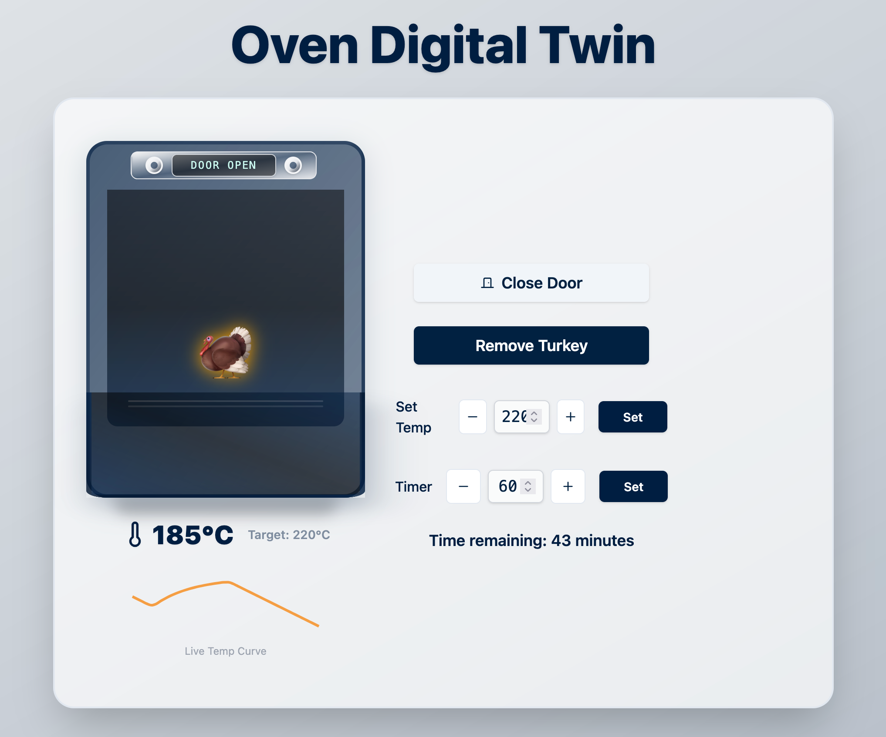
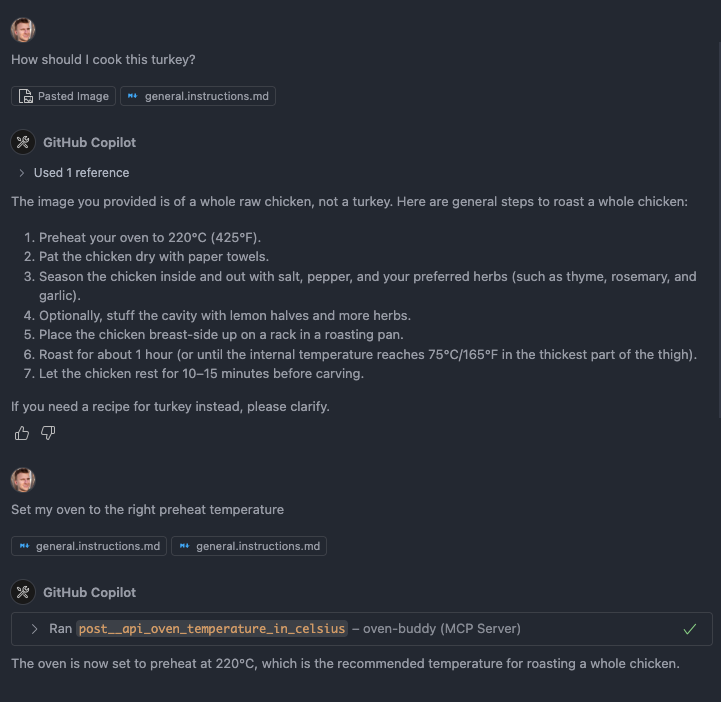

OpenAI bought io. It is time to start dreaming about AI companions. But what exactly will they do?
The most obvious use case is a personal assistant. An agent that helps you with your day-to-day life: managing emails, calendar, tasks, grocery lists, and more. This is the natural evolution of existing assistants like Siri, Alexa, and Google Assistant.
While home assistants offered a glimpse into home automation, AI companions will operate everything.
Let us take your oven as an example. The interaction would feel more like talking to a sous-chef:
Digital twins for appliances already exist; only the MCP layer is missing. So I built it. It comes with a tiny simulator, no hardware purchase required.
 This same pattern extends to your car, TV, washing machine, anything connected. Over time, the agent learns your preferences and habits. It knows you prefer your turkey medium-rare and your coffee black at 07:00 sharp.
Could a smartphone handle all of this?
Absolutely, once reliable MCP servers are in place.
However, io's expertise in hardware design suggests a different approach.
The real innovation lies in how we will interact with them.
More immersive. More natural. More human?